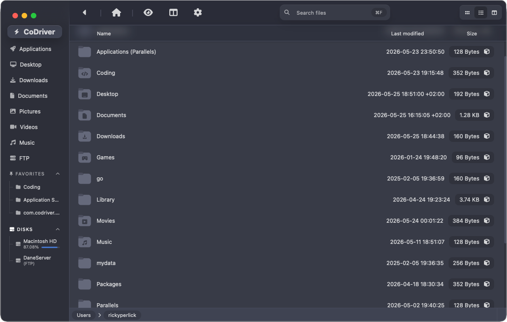

Experience real-time directory exploration at raw drive speeds. CoDriver walks your folders using parallel multi-threaded disk walks—unifying index-free browsing, rich previews, dual-pane operations, and integrated Gemini AI superpowers.

Explore the modular components that make CoDriver a highly capable companion for developers, creators, and power users.
CoDriver is designed to handle directories containing hundreds of thousands of files without missing a beat. It accesses disk blocks natively and streams files directly to the UI.
Built for efficiency, CoDriver lets you toggle a balanced Dual-Pane layout using a single button. Say goodbye to dragging and dropping files across multiple windows.
F5 to copy or Shift+F5 to move them straight into the opposite pane.
F8 to trigger a robust concurrent file search isolated to the active folder tree.
Cmd/Ctrl + Shift + M.
Work directly on remote file systems as if they were local storage modules. CoDriver has native FTP and SFTP client integration built directly into the explorer tree.
Compress files instantly or decompress deep directory structures without leaving your file explorer. CoDriver features a native compression suite tuned for high-performance ratios.
Supercharge your visual workflow natively. Right-click any image inside the explorer and select the Upscale panel to generate high-resolution details on-demand.
CoDriver bypasses heavy file system indexing services, bringing frontend events down to metal operations in microseconds.
A GPU-accelerated web view renders our stunning, responsive UI, reacting in real-time to active states.
Tauri v2 bridges UI interactions directly to Rust backend crates, maintaining thread safety and zero latency.
Parallel disk walking via rayon and notify-driven file monitors react instantly to directory adjustments.
Direct system interaction with Windows, macOS, and Linux kernels with no intermediary cache buffers.
Built for the modern developer workspace. Available natively across all major desktop environments.
Connection trouble? Make sure to verify your SSH key configurations in settings. Check out our FTP / SFTP Integration Guide.